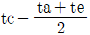
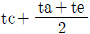
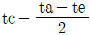
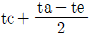
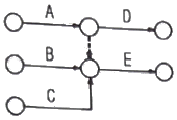
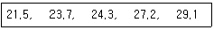
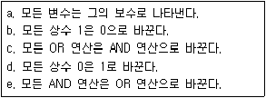

압연기능장 (2017-07-08 기출문제)
1과목: 임의 구분
1. 냉연강판 제품의 품질 특성으로 틀린 것은?
- 열연강판보다 강도 및 경도가 증가한다.
- 냉연제품은 열연제품보다 적은 동력을 필요로 한다.
- 스케일 부착이 없으며 표면이 곱고 미려하다.
- 전기 도금, 도장 처리를 하면 우수한 내식성을 갖는 제품을 만들 수 있다.
(정답률: 92%)

2. 압연 공정제어 모델 작업법 중 실적 데이터의 패턴화에 관한 설명으로 틀린 것은?
- 모델화가 쉽다.
- 실용화가 빠르다.
- 식이 단순하고 계산이 쉽다.
- 조업 조건이 변경되어도 새로운 해석이 필요하지 않다.
(정답률: 88%)
3. 선재의 품질결함 중 Rod 길이 방향으로 길게 발생되는 겹침흠의 원인이 아닌 것은?
- 롤의 압하가 과다할 때
- 가이드(guide)의 배열이 부적합할 때
- 압연온도의 구배가 적합하지 않을 때
- 반제품의 표면정정 상태가 불량할 때
(정답률: 57%)
4. 가열로 설비의 로압 관리 중 로압이 낮은 경우 나타나는 현상은?
- 침입공기가 많아 열손실이 증가한다.
- 개구부 방열에 의한 작업자 위험도가 증가한다.
- 방열에 의한 로체 주변 철구조물 손상이 발생한다.
- 슬래그 장입구, 추출구, 로내 점검구에서의 방입에 의한 열손실이 증가한다.
(정답률: 77%)
5. 롤 스탠드(roll stand) 중 계두식 스탠드의 특징을 설명한 것 중 틀린 것은?
- 캡의 체결 부분이 이완되기 쉽다.
- 롤의 교환을 신속하게 할 수 있다.
- 스탠드 상부 캡을 벗기고 롤을 교체할 수 있다.
- 주로 큰 하중이 걸리는 대형 압연기 등에 사용한다.
(정답률: 81%)
6. 공형물의 구성요건에 대한 설명으로 틀린 것은?
- 실수율이 높을 것
- 재료의 흐름오차가 클 것
- 롤 스페이스를 만족시킬 것
- 국부 마멸을 일으키지 않을 것
(정답률: 83%)
7. 기계의 활동부분에 유체윤활 상태를 유지하며 강한 유막으로 인하여 달라붙는 것을 방지하는 등 마찰저항을 적게 하는 윤활작용을 무엇이라 하는가?
- 방청작용
- 밀봉작용
- 감마작용
- 응력분산작용
(정답률: 72%)
8. 냉간압연 후 스트립의 표면에 부착된 압연유 등을 제거하는 전해 청정의 세정액으로 사용하는 것이 아닌 것은?
- 수산화나트륨(NaOH)
- 시안화나트륨(NaCN)
- 인산나트륨(Na3PO4)
- 올소규산나트륨(2NaOㆍSiO2)
(정답률: 77%)
9. 탄소강을 열간압연하기 위해 가열로 내에 장입하여 가열하면 슬래브의 표면에 스케일이 형성된다. 다음 스케일의 조성 중 가장 양이 많은 것은?
- FeO
- Fe2O3
- Fe3O4
- Fe3C
(정답률: 74%)
10. 냉간압연용 압연유의 구비조건에 대한 설명으로 틀린 것은?
- 압연재의 탈지성이 좋을 것
- 유막의 강도가 작을 것
- 압연재 표면에 균일하게 부착할 것
- 기름의 안정성 및 에멀션화성이 양호할 것
(정답률: 88%)
11. 압연기의 압연속도와 마찰계수와의 관계를 설명한 것 중 옳은 것은?
- 속도와 마찰계수는 상관없다.
- 속도가 빠르면 마찰계수는 증가한다.
- 속도와 관계없이 마찰계수는 일정하다.
- 속도가 빠르면 마찰계수는 감소한다.
(정답률: 81%)
12. 곱쇠(coil break)의 발생 원인이 아닌 것은?
- 냉각이 덜된 상태에서 언코일링 시 발생
- 권취시 장력 및 프레스 롤의 압력이 부적정할 때
- 디플렉터 롤(deflector roll)의 접촉 각도가 적은 경우
- 표면 가까이에 있는 기포의 미압착 및 대형 개재물이 있는 경우
(정답률: 66%)
13. 냉연 공정에서 풀림(Annealing)의 목적이 아닌 것은?
- 내부 응력을 제거시킨다.
- 경화된 재료를 연화시킨다.
- 경도 및 항복점을 상승시킨다.
- 변형 저항을 감소시켜 가공성을 향상시킨다.
(정답률: 83%)
14. 개방공형에서 공형간극은 어디에 위치해 있는가?
- 롤과 롤의 경계
- 판과 롤 접촉부
- 재료의 모서리
- 롤 지름
(정답률: 78%)
15. 열연권취기의 Q.O.C(Quick Open Control) 작동에 대한 설명 중 틀린 것은?
- 스트립 top부 권취 시 유니트롤이 동시에 작동하여 단자 회피 제어를 한다.
- 스트립 top부 권취 시 멘드렐의 세그먼트 마크가 각인되는 것을 없애기 위한 제어이다.
- 보통 스트립 top부가 수회정도 감길 때까지 단차 회피 제어를 실시한다.
- 스트립 top부 권취시 단차부를 회피 하기 위해 단차부의 통과시 유니트롤이 jump up 하게 된다.
(정답률: 52%)
16. 냉연설비 중 롤을 회전시키는 스핀들 형식에서 밀폐형 윤활이며, 고속 회전이 가능한 특징을 갖는 형식은?
- Gear type
- Sleeve type
- Flexible type
- Universal joing type
(정답률: 84%)
17. 롤의 직경이 340mm, 회전수 150rpm 일 때 압연되는 재료의 출구 속도는 3.67m/sec 이었다면 선진율은?
- 37%
- 40%
- 47%
- 55%
(정답률: 64%)
18. 루프제어 시스템 중 소재가 후단 압연기 메탈오프(metal off) 직전에 루퍼의 높이와 장력의 참조값을 감소시킴으로써 열연판이 압연기를 빠져 나갈 때, 소재가 원활하게 통판되도록 하게 하는 기능은?
- 트랭킹(tracking) 제어 기능
- 노 휘프(no-whip) 제어 기능
- 소프트 터치(soft touch) 제어 기능
- 비간섭 제어(non-interactive control) 제어 기능
(정답률: 75%)
19. 전기도금 후 인산염처리, 크롬산염처리 등 후처리 실시 목적으로 가장 거리가 먼 것은?
- 내식성
- 도장성
- 용접성
- 가공성
(정답률: 66%)
20. 산세 설비 중 속도 불균형을 완화해주고, 가ㆍ감속 시의 급격한 장력변동에 의한 흠 발생 및 전단 길이의 난조를 방지하기 위한 완충기 역할을 하는 설비는?
- 파일러(piler)
- 용접기(welder)
- 루핑 피트(looping pit)
- 시어 레벨러(shear leveler)
(정답률: 77%)
2과목: 임의 구분
21. 냉간압연 강판 및 강대(KSD 3512)에서 일반용 강판 및 강대, 조질은 표준 조질을 나타내는 기호로 옳은 것은?
- SPCF - 1
- SPCG - 8
- SPCC - S
- SPCD - A
(정답률: 73%)
22. 다음의 표면처리 강판 중 화성처리강판에 해당되는 것은?
- 아연도금강판
- 주석도금강판
- 인산염처리강판
- 알루미늄도금강판
(정답률: 68%)
23. 다음 중 코크스로 가스의 연소성분과 발열량으로 옳은 것은? 단, m과 n은 상수이다.)
- 성분 : H2, CH4, CO
발열량 : 약 4500kacl/Nm3 - 성분 : CO, CmHn, H2
발열량 : 약 9000kcal/Nm3 - 성분 : CO, H2
발열량 : 약 7450kcal/Nm3 - 성분 : CmHn
발열량 : 약 10000kcal/Nm3
(정답률: 75%)
24. 3단 압연기로서 상, 하부 롤이 같은 방향, 중간롤이 반대 방향으로 회전하는 것은?
- 데라 압연기
- 라우드식 압연기
- 스테켈식 압연기
- 센지미어식 압연기
(정답률: 68%)
25. 열연공정인 RSB 혹은 VSB에서 실시하는 작업이 아닌 것은?
- 스케일(scale) 제거
- 트리밍(trimming) 작업
- 슬래브(slab) 폭 변화
- 슬래브(slab) 두께 변화
(정답률: 63%)
26. 냉간압연 중 압연 롤과 강판(Strip)사이에 이물이 용착되어 강판표면에 광택을 가진 요철흠이 발생되는 결함은?
- Dent
- Scratch
- Pinch Tree
- Edge Burr
(정답률: 78%)
27. 재료를 회전시켜 다른 패스로 보내거나 재료의 위치를 바로 잡는 조종 장치는?
- 롤
- 피니언
- 커플러
- 매니플레이터
(정답률: 79%)
28. X선 두께 측정기에 대한 설명으로 틀린 것은?
- 자동제어에 적합하다.
- 스트립의 속도가 빨라도 측정이 가능하다.
- 스트립의 pass line이 변해도 오차가 없다.
- Hot 스트립과 같은 고온의 재료는 측정이 불가능하다.
(정답률: 75%)
29. 열간압연이 끝난 열연코일을 냉각 후에 실시하는 조질압연(스킨패스)작업의 가장 큰 목적은?
- 코일의 용접
- 표면의 도금
- 산화피막의 형성
- 열연 스트립의 형상을 교정
(정답률: 81%)
30. 압연의 특성을 설명한 것 중 틀린 것은?
- 압연하중은 롤에 들어가는 재료가 얇을수록 감소한다.
- 판의 최소 두께는 마찰계수와 직접적인 관계가 있다.
- 열간압연의 경우보다 냉간압연의 경우에 더 얇은 판재를 만들 수 있다.
- 롤 지름은 압연기로서 압연할 수 있는 최소 판 두께를 결정하는데 중요한 영향을 끼친다.
(정답률: 63%)
31. 일산화탄소(CO) 15Nm3을 완전 연소시키는데 필요한 이론 산소량은 얼마인가?
- 2.5Nm3
- 5.0Nm3
- 7.5Nm3
- 23.8Nm3
(정답률: 56%)
32. 열간압연에서 상부 롤의 경이 하부 롤 경보다 클 경우 압연재의 방향은 어떤 현상이 발생하는가?
- 압연재의 방향은 변화가 없다.
- 압연재는 아래쪽 방향으로 향한다.
- 압연재는 위쪽 방향으로 향한다.
- 압연재는 좌우 방향으로 향해 Camber가 발생한다.
(정답률: 79%)
33. 알루미늄 아연 합금 도금 강판의 특징을 설명한 것 중 틀린 것은?
- 적절한 용접 조건에서는 용접이 용이하다.
- 흑색으로 내열성은 좋지 않으나, 미려한 표면 외관을 지니고 있다.
- 아연 도금 강판과 거의 동등한 가공성과 도장성을 지니고 있다.
- 장기 내구성이 우수하며, 아연 도금 강판에 비해 수명이 길다.
(정답률: 78%)
34. 압연 재료가 롤에 접촉하고 있는 부분 중 중립점이 갖는 특징으로 틀린 것은?
- 접촉 부분의 중간점
- 재료의 슬립이 없는 점
- 압연력이 최대로 작용하는 점
- 롤의 원주속도와 압연재의 통과속도가 같은 지점
(정답률: 65%)
35. 냉간압연의 알반적인 제조공정 순서로 옳은 것은?
- 산세→냉간압연→표면청정→풀림→조질압연→정정
- 산세→표면청정→냉간압연→정정→풀림→조질압연
- 냉간압연→산세→표면청정→정정→조질압연→풀림
- 냉간압연→풀림→표면청정→조질압연→산세→정정
(정답률: 78%)
36. 한 번 어느 방향으로 소성변형을 가한 재료에 역방향의 하중을 가하면 전과 같은 방향으로 소성변형을 할 경우보다는 소성변형에 대한 저항이 감소한다. 이것을 무엇이라고 하는가?
- 바우싱거 효과(bauschinger effect)
- 오렌지 필 효과(orange peel effect)
- 코트렐 효과(cottrell effect)
- 엘라스틱 효과(elastic effect)
(정답률: 80%)
37. 연속풀림라인(CAL)은 전해청정→연속풀림→조질압연→정정 순으로 연속작업이 이루어진다. 이때 출측에서 코일과 코일의 용접한 부위를 절단하는데 사용하는 설비의 명칭은?
- Crop Shear
- Flying Shear
- Side Trimmer
- Up-Cut Shear
(정답률: 67%)
38. 열간압연 품질에서 폭의 정도에 영향을 주는 요인이 아닌 것은?
- 롤 경의 변동
- 스키드 마크 등의 편열
- 사상압연기에서 텐션의 변동
- 조압연에서의 에저 세트에 의한 바 폭의 변동
(정답률: 49%)
39. 압연생산성을 올리기 위해 소재가 압연기에 진입하는 주기(Idle Time)를 일정하게 제어하는 모드를 무엇이라 하는가?
- 트랙킹(Tracking)
- 밀 페이싱(Mill Pacing)
- APC(Automatic Position Control)
- AMTC(Automatic Minimum Tension Control)
(정답률: 60%)
40. 마찰면이 저속운동을 하고, 고하중일 경우나 액체 급유가 이용되지 않을 때 적절한 윤활 급유 장치는?
- 유니버어셜 급유장치
- 유막 베어링 급유장치
- 오일 미스트 급유장치
- 그리이스 급유장치
(정답률: 71%)
3과목: 임의 구분
41. 열간압연 롤에 있어서 폭방향 중앙부의 두께를 tc, 양 끝단부의 두께를 각가 ta, te 로 할 때 Crown량은?




(정답률: 70%)
42. 압연소재의 정정에 이용되는 열간 스카핑머신(Hot Scarfing Machine)의 특징이 아닌 것은?
- 손질 깊이 조정이 용이하다.
- 냉간 스카핑에 비해 산소 소비량이 많다.
- 냉간 스카핑에 비해 작업속도가 빠르다.
- 균일한 스카핑이 가능하며 평탄한 손질면을 얻을 수 있다.
(정답률: 81%)
43. 표준시간을 내경법으로 구하는 수식으로 맞는 것은?
- 표준시간 = 정미시간 + 여유시간
- 표준시간 = 정미시간 × (1+여유율)
- 표준시간 = 정미시간 × [(1 / (1-여유율)]
- 표준시간 = 정미시간 × [(1 / (1+여유율)]
(정답률: 64%)
44. 다음 그림의 AOA(Activity-on-Arc) 네트워크에서 E 작업을 시작하려면 어떤 작업들이 완료되어야 하는가?

- B
- A, B
- B, C
- A, B, C
(정답률: 69%)
45. 품질특성에서 X관리도로 관리하기에 가장 거리가 먼 것은?
- 볼펜의 길이
- 알코올 농도
- 1일 전력소비량
- 나사길이의 부적합품 수
(정답률: 67%)
46. 다음 데이터로부터 통계량을 계산한 것 중 틀린 것은?

- 범위(R) = 7.6
- 제곱합(S) = 7.59
- 중앙값(Me) = 24.3
- 시료분산(s2) = 8.988
(정답률: 65%)
47. 검사특성곡선(OC Curve)에 관한 설명으로 틀린 것은? (단, N: 로트의 크기, n: 시료의 크기, c: 합격판정개수이다.)
- N, n 이 일정할 때 c 가 커지면 나쁜 로트의 합격률은 높아진다.
- N, c 가 일정할 때 n 이 커지면 좋은 로트의 합격률은 낮아진다.
- N / n / c 의 비율이 일정하게 증가하거나 감소하는 퍼센트 샘플링 검사 시 좋은 로트의 합격률은 영향이 없다.
- 일반적으로 로트의 크기 N 이 시료 n 에 비해 10배 이상 크다면, 로트의 크기를 증가시켜도 나쁜 로트의 합격률은 크게 변화하지 않는다.
(정답률: 50%)
48. 브레인스토밍(Brainstormig)과 가장 관계가 깊은 것은?
- 특성요인도
- 파레토도
- 히스토그램
- 회귀분석
(정답률: 75%)
49. Mg 합금이 구조재료로서 갖는 특성을 설명한 것 중 틀린 것은?
- 소성가공성이 높아 상온변형이 쉽다.
- 비강도가 커서 항공우주용 재료에 유리하다.
- 감쇠능이 주철보다 커서 소음방지 재료로 우수하다.
- 기계가공성이 좋고 아름다운 절삭면이 얻어진다.
(정답률: 63%)
50. 다음 중 침탄용강에 대한 설명으로 틀린 것은?
- 첨탄용강의 표면에 결함이 없어야 한다.
- 첨탄용강의 재료는 저탄소강이어야 한다.
- 침탄량을 감소시키는 원소는 Cr, Ni, Mo 등이 있다.
- 고온에서 장시간 가열하여도 결정립자가 성장하지 않아야 한다.
(정답률: 47%)
51. 주철의 성정 원인으로 틀린 것은?
- A1 변태에서 부피 변화로 인한 팽창
- 시멘타이트의 흑연화에 의한 팽창
- 불균일한 가열로 생기는 균열에 의한 팽창
- 펄라이트 중에 고용되어 있는 Ni의 산화에 의한 팽창
(정답률: 37%)
52. 구리에 5~20%Zn을 첨가한 황동을 말하며, 강도는 낮으나 전염성이 좋고 색깔이 금색에 가까우므로, 모조금이나 판 및 선 등에 사용되는 것은?
- 켈밋
- 톰백
- 문쯔메탈
- 길딩메탈
(정답률: 62%)
53. 탄소강에서 Mn 의 영향이 아닌 것은?
- 경화능을 크게 한다.
- 고온에서 결정립의 성장을 억제한다.
- 편석을 일으키며, 상온 취성의 원인이 된다.
- 강의 점성을 증가시키고 고온 가공을 쉽게 한다.
(정답률: 75%)
54. 탄소강의 물리적 성질에 관한 설명 중 틀린 것은?
- 탄소강의 비중은 탄소량이 증가할수록 증가한다.
- 탄소강의 탄소량이 증가할수록 열팽창계수는 감소한다.
- 탄소강의 탄소량이 증가할수록 비열은 증가한다.
- 탄소강의 탄소량이 증가할수록 열전도도는 감소한다.
(정답률: 52%)
55. 합금주철에서 합금원소가 미치는 영향을 설명한 것으로 틀린 것은?
- Mo은 탄화물을 생성하고 흑연화를 저지한다.
- Cr은 Fe3C를 강력하게 안정화시키는 원소이다.
- Si는 주철 중의 Fe3C를 분해하여 흑연화를 저지한다.
- Ni은 그 함량에 따라 주철의 기지를 pearlite→sorbite→martensite→austenite로 변태한다.
(정답률: 47%)
56. 다음 중 산업안전심리의 5대 요소에 해당하지 않는 것은?
- 습관
- 동기
- 감정
- 지식
(정답률: 73%)
57. 재해조사의 목적을 가장 적절하게 설명한 것은?
- 책임소재를 규명하기 위해서
- 동종재해 및 유사재해의 재발방지
- 직접적인 사고 원인을 찾기 위해서
- 발생빈도가 많은 사고를 찾아내기 위해서
(정답률: 70%)
58. 자동제어를 장치 등에 이용하는 경우의 이점이 아닌 것은?
- 인건비를 감축할 수 있다.
- 생산원가를 줄일 수 있다.
- 품질을 균일화 시킬 수 있다.
- 생산 설비의 수명을 단축시킬 수 있다.
(정답률: 83%)
59. 자동제어의 종류 중 보상이나 제어 임무 수행에 디지털 컴퓨터를 사용하는 제어는?
- 개발 제어
- 시퀸스 제어
- 되먹임 제어
- 디지털 제어
(정답률: 70%)
60. 드모르간(De Morgan' theorem) 정리는 임의의 논리식 보수를 구하는 순서가 있다. [보기]에서 보수를 구하는 일반적인 순서로 옳은 것은?

- b → d → e → c → a
- d → b → e → c → a
- e → c → b → d → a
- c → e → b → d → a
(정답률: 53%)